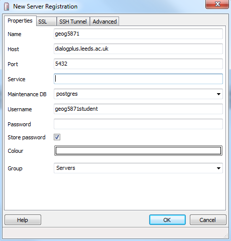

We have created a PostgreSQL database instance named ‘geog5871’ on the dialogplus.leeds.ac.uk remote server.
In this task you will:
- Create a connection to the geog5871 database instance
- Interrogate the existing ‘tweets’ tables using SQL
- Create your own table using additional data-sets
1.0 Interfacing with PostgreSQL using pgAdmin
If you are using a computer on the University of Leeds network (or connected to the VPN off campus) you can connect directly to the
PostgreSQL database instance on the dialogplus.leeds.ac.uk server through pgAdmin.
pgAdmin is a free and open source administration and development platform for PostgreSQL.
- Open pgAdmin (available here if you need to download it) and connect to the
dialogplus.leeds.ac.uk server by clicking the plug icon on the top left hand side of the toolbar, this 'Adds connection to a Server'
(Note that if you are installing this on your own machine and it is 64bit, you may need the Microsoft 32bit Visual C++
redistribution [http://www.microsoft.com/en-gb/download/details.aspx?id=40784]. The error you’ll see is along the lines
of “msvcp120.dll not installed on your machine ”)
If you are accessing the server from outside the university OR are using a laptop in the university, before you attempt to log on to the server, make sure that you have activated the VPN.
- In the ‘New Server Registration’ dialogue box, enter the following credentials including the database
username and password, remember this is different to your personal dialogplus username and password:
Name: geog5871
Host: dialogplus.leeds.ac.uk
Port: 5432
Username: XXX
Password: XXX

pgAdmin has extensive functionality which makes it easy to query, edit and display data;
you will see an object browser on the left hand side of the window, showing the various database
connections (you should see the geog5871 connection here), a properties window on the right hand
side and an SQL pane on the bottom right hand side.

- Expand the geog5871 connection and view the different subdirectories enclosed within.
- Find the ‘tweets’ table located in Schemas > public > Tables, and explore the data.
How many columns are there? How many rows are there? Which column is the primary key? This data represents tweets that were
collected during Hurricane Sandy. Unique usernames and anything else that may be used to identify an individual user has been removed
and replaced with 'NA'. There are a number of other tables saved in the database from previous years. Explore these now to see what
data is available to you.
2.0 Querying the Data
- Right click on the tweets table and select ‘Scripts > SELECT Script’.
This query builder allows you to query the data using Structured Query Language (SQL).
There is also the option to use pgSQL; spatially enabled structured query language.
Although this database is a PostgreSQL database, the data within it is not spatially enabled.
- Use the w3 schools web pages to work out how to build
an SQL query to select all messages that were tweeted on day 30 of the sample.
- Build a further 2 queries of your choice on different tables and made a note of the syntax you used.
You can also save the query text if you wish.
3.0 Creating a Table
- As well as querying data from existing tables, you can also create your own tables within the database.
Visit the spreadsheet page on the USGS webpage and
download data in CSV format for all earthquakes which have occurred in the past month. Open this file in excel
to view the data. Tidy up the spreadsheet so that only; ‘time’, ‘latitude’, ‘longitude’, ‘depth’, ‘magnitude’,
‘id’ and ‘place’ remain.
- In pgAdmin, right click on ‘tables’ in the left hand column and select ‘New Table’.
You now need to create a table definition for the Earthquake data. Ensure that you add a new column for each column
in the dataset and choose an appropriate data type (choose wisely - we recommend numeric and varying character).
As all of your tables will be saved in the same location, we recommend that you include your username in the title
so you can identify your table once it has been created e.g. georo_earthquakes (Ensure that you use lower case for naming your table). Under the 'Constraints' tab
you should set a Primary or Foreign Key so you can uniquely identify each of the rows. We recommend 'id'.
Once happy with your table definition, click OK to create the table. It will be empty at this point.
- Right click on the newly created table in the pgAdmin Object Browser and import the Earthquakes CSV file into the table.
Tick the 'Header' checkbox under 'Misc. Options'. The encoding field can be left blank.
- View the data to ensure it has imported correctly, you can make changes after creation via the 'Scripts' menu but this
can be hard work. If you create a table incorrectly, or you are not planning to use it, please DELETE THE TABLE so as not to clog up the
database.